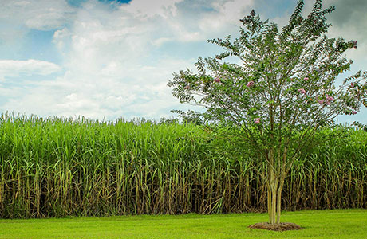
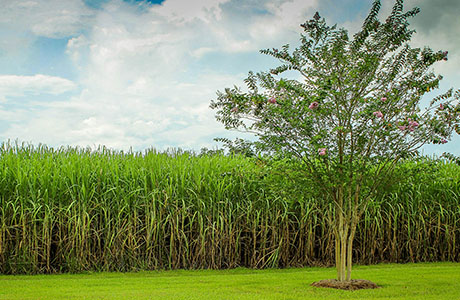

ピックアップ素材
素材はすべて厳選していますが、特にこだわりを持っている素材を紹介します。
砂糖は沖縄産と北海道産を使い分けています。
栗
モンブランの栗は岐阜県産を使用しています。
薄力粉
薄力粉はすべて北海道産を使用しています。

当店のスイーツは、国内産の素材にこだわって作っています。

素材はすべて厳選していますが、特にこだわりを持っている素材を紹介します。
砂糖は沖縄産と北海道産を使い分けています。
モンブランの栗は岐阜県産を使用しています。
薄力粉はすべて北海道産を使用しています。